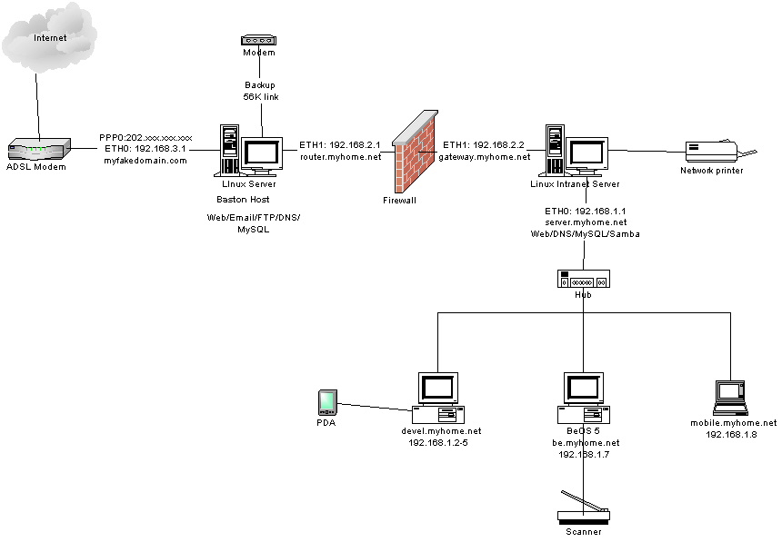

Note: Domain names and IP numbers in this article have been changed. I have no connection with myfakedomain.com and myhome.net--please do not send questions or complaints to them.
Acknowledgement
This article is a walk through the steps I did to host my own domain name at home. It is not a guide or tutorial about how to set up and host your domain. There are already lots of HOW-TOs and tutorials on that topic. However, this artice provides working example for your reference, and I've also included URLs to some really useful web sites.
Background
In late 2000, when everyone were talking or already using broadband, I was still using my Hayes 28.8kbps modem to surf the net. My reason is simple, none of the broadband provider provides fix I.P. address although they did provide unlimited usage plan. I have a few domains name registered and hosting at some ISP. The service of the web hosting companies are limiting to html, perl cgi, pop server and maybe mod_rewrite. They never provide SMTP, MySQL, PHP4. whatever useful or at a really high price. That's why I'm looking for a broadband provider willing to provides fix I.P. so that I can host my own web site and run whatever I want.
Thanks god. At Jan 2001, one of the broadband provider at my area annouced that they will provides fix I.P. with extra cost. It is really expensive but hey that's what I need. I'm willing to pay for any services that fit my needs. On the other hand, I can save a lot of butts from web hosting company where my domain names currently located. Why not dynamic I.P.? Yes dynamic I.P. may also do the same using some tricks with dynamic DNS as provided by no-ip, DynDNS... etc. but it is too annonying and not really good if you are going to host your own email server.
Planning the Network
OK I subscribed to the broadband service finally. It takes two weeks to arrange a technical guy to install the splitter and ADSL modem. Actually I can do it myself but they don't want me to. Anyway this is a good time to build the network and prepair for the high speed connection. Before actually building the network, it is better to think about the topology first. I make use of my spare old hardware and spent some money to build two linux box. One linux box will be the baston host running Apache web server, ftp server, email server and MySQL database server. The baston host will act as an exterior router routing traffic between the internet and the intranet. The other linux box will be the Intranet server hosting internal application and data. The intranet box will act as an interior router. Someone asked, why two linux box? Well, for security reason of course. Please refer to your technical books about firewalling for details explaination. Figure 1 shows the network diagram of my home network.

Since I got only one fixed IP, I'm not going to run any high traffic web site. Only one baston host may do the job well, since it is a basic and simple network. It is the solution for me, not neccessary for everyone who are reading this article. Again, think about your own plan.
Building the network
I downloaded and installed RedHat 7.0 to both of the linux boxes. Choose your own packages that sounds interest to you. It is fine for you to use other distribution. However, there were some essential components required in order to setup an internet server. Please refer to the HOW-TO at linuxdocs.org. Again this is not a tutorial. I strongly suggest the following HOW-TOs for this section:
And the following mini-HOWTOs:
If you know nothing about what linux can do, you must read 'The Linux Networking Overview HOWTO'.
Secure the baston host by packet filtering firewall using ipchains
Ok now I got RedHat installed but the linux boxes were not protected yet. I need to setup firewall and routing table in order to protect the linux machines and forwarding packets from Internal network to extranet network. This is a really big job for home user, and me too. I did a lot of search at freshmeat.net, google and sourceforge. I tried a lot of free firewalling scripts and none of them provides good security and hard to modify. Yes I'm lazy to write my own filtering and routing rules. You are lucky. I found a really good firewall scripts @ ICEBERG. Their scripts are easy to modify and setup all the routing. I run their scripts on both of my linux machines and then I'm free to do other tasks now. Thanks again ICEBERG. Following is a list of useful documentation regarding firewalling and packet forwarding:
If you wanna use Napster behind the firewall, you should read IPMasquerading+Napster mini-HOWTO
Setup External DNS Server at baston host
Although I'll use HAMMER NODE to host the DNS entry for my domain name, a working caching only nameserver is still required to run the linux box. Configuration files were shown below:
/etc/named.boot
/etc/named.conf
/var/named/named.ca
/var/named/named.local
/var/named/named.myfakedomain.com
/var/named/named.myhome.net
/var/named/named.rev.3
/var/named/named.rev.2
Connecting to the ADSL modem
Connecting the ADSL modem under linux is easy, just download the RPM of RP-PPPOE from Roaring Penguin Software Inc, install it and then run the adsl-setup, that's all. As easy as an window machine.
Migrating domain name to baston host
At this moment, the web server does not seems working yet. I fixed it by adding the line below to the /etc/httpd/conf/httpd.conf file:
ServerName www.myfakedomain.com (for baston host)
ServerName www.myhome.net (for Intranet Server)
The web servers on both linux were up and running after a reboot. Now what's next? I started my favourite browser Netscape and did a search on my favourite search engine Google for a Free DNS server. Finally I reach HAMMER NODE. I was lucky that I could reached hn.org. They provides free services for both dynamic I.P. and static I.P. user. They have good and easy to use UI and manages to provides both reliable and stable service. I created a virtual domain mappings accounts and have the configuration like this: